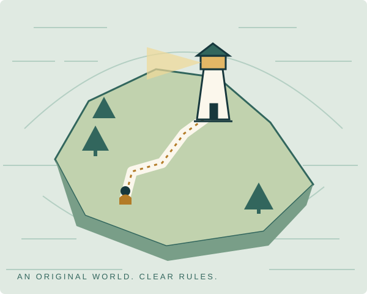
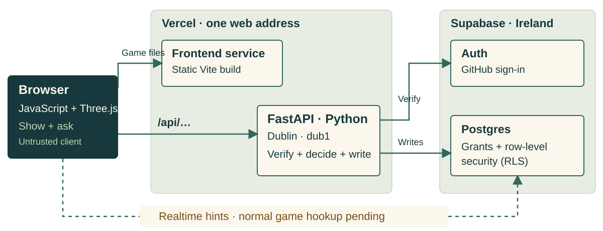
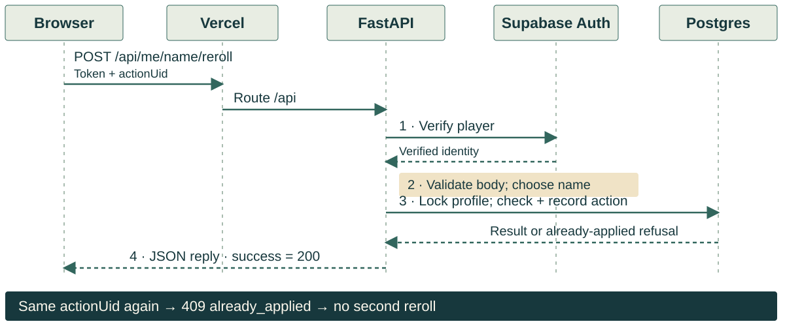

01 / THE IDEA
The Great Plot Twist
A text mystery becomes a cooperative coast.
The programming problem
Make an island easy to explore while keeping its rules trustworthy.
Original pixel art and sound.
Browser presentation. Python rules.
Play money only.

Original project assets · docs/lanes/G.md · docs/PRESENTER-SCRIPT.md
We started with the text mystery Plot Twist and built a browser world around it. The player explores a coast, follows an introduction and works toward a case with a crew. The programming work has two sides: make the experience readable and responsive, and keep progress and play money under trustworthy rules. Our art and sound are original, with editable sources in the repository. This talk explains those decisions and their evidence. We will distinguish the completed server work from the browser connection that is still paused. The separate demo shows the coast and stops at the schooner without revealing the solution.
02 / THE PLAYER LOOP
Explore. Investigate. Decide.
Four verbs, with an explicit boundary between implementation and connection.
Travel
Choose a place on the sea chart.
Investigate
Find clues through server-checked actions.
Cooperate
Different seats contribute to a shared board.
Continue
Keep browser and authoritative progress distinct.
Built World, intro, case backend, crews and play-money systems.
Paused G9: connect the normal browser mystery and multiplayer flow.
Case proof: docs/handoff/case-complete-release.md · frontend/src/adapter/select.js
The intended loop is travel, investigate, cooperate and continue. The world, intro, chart and local journal are playable in the browser. The minimum mystery backend is now complete: it handles clues, a shared board, partner orders, the three-light finale and an earned reveal. We have actual API-to-database playthroughs for a solo player with partners and for four players. That does not mean the normal game is already connected end to end. G9, the browser mystery adapter, is paused until the laptop returns. A local rehearsal is clearly labelled and cannot award live progress. This distinction lets us explain what works without presenting a convincing stand-in as browser multiplayer.
03 / THE ARCHITECTURE
Three parts, one trust boundary.

Permitted browser reads use grants and RLS. Authoritative game writes go through the API.
vercel.json · docs/ARCHITECTURE.md · docs/INTERFACES.md
The browser runs plain JavaScript and Three.js. Vite builds the files served by Vercel. Requests beginning with slash api go to the Python FastAPI service at the same web address. The configured function region is Dublin, near the Supabase database in Ireland. Supabase supplies identity verification and Postgres. A browser can read only what its grants and row policies permit; game writes go through the server. Private Realtime rooms carry small change hints so a crew can refetch its view. That backend and its production switch are present, while the normal game subscription hookup remains part of paused G9. The dashed connection in the diagram marks that remaining work, not a finished browser flow. Keeping the responsibilities separate also makes each part testable.
04 / ONE WRITE, END TO END
Follow one request.
Implemented API example: reroll a generated captain name. Normal game account transport still awaits integration.

backend/server/routes/captain_name.py · account/name_store.py · case_service.py
A captain-name reroll explains a write without showing any case content. The browser sends a verified session token and one action identifier. Vercel routes the request to FastAPI. The server verifies identity through Supabase and validates the body. It chooses a generated name instead of trusting an arbitrary name or a player identifier from the browser. The database locks the profile, checks the one allowed reroll and records the action. Repeating this particular action returns 409 already applied without a second effect. Case and festival intents use a different documented repeat shape: they return 200 with a stored outcome and fresh state. The shared principle is stable identity for the action. A timeout alone never tells the browser whether a write happened.
05 / RULES AND ACCESS
The server decides.
The database guards.
Grants and RLS
Operation permission and row visibility are separate checks.
Locks and constraints
Concurrent requests preserve ownership and wallet invariants.
Exact receipts
Retries recover the recorded outcome without paying twice.
Privileged server access bypasses RLS. Every service still has to verify the caller and scope the crew.
supabase/README.md · wallet rules · case/NPC receipt and concurrency tests
The browser is not allowed to decide a balance or a case result. The server starts with verified identity, validates the intent and applies Python rules. Postgres adds another boundary. Grants say whether a role may use an operation; row-level security restricts which rows that role can see. The privileged server connection bypasses RLS, so explicit caller and crew checks remain necessary. Locked writes protect money and ownership when requests race. Stable receipts make retries recoverable, including an old partner order after a seat changes. We test refusal, repetition and concurrency as well as success. The migration protocol also compares the applied text with the repository file and checks the resulting schema and security-advisor findings. These are separate forms of evidence, not one universal security test.
06 / INFORMATION AND PRESENTATION
Protect the story and the browser.
Earned information
Case views exclude unreached cards and unearned reveal text.
Small allowed surface
Private views use no-store. CSP restricts scripts and assets.
Visible, optional cues
Original audio starts after a gesture, with captions and volume controls.
Production build: 130 text files checked against 12 protected lines, plus elimination-data checks.
Build guard · production CSP checks · frontend/ASSETS.md · audio/festival.js
A mystery needs an information boundary. The server builds views containing only what that crew has earned. The browser build checks protected reveal fingerprints and elimination data in its public output. The current frontend release gate checked one hundred and thirty text files against twelve protected lines. That is specific scan coverage, not a promise that every possible paraphrase has been detected. Private API views use no-store responses. Local production browser gates check the restrictive Content Security Policy and reject external asset requests. Presentation has another useful boundary: sound starts only after a trusted gesture, shares master, music and effects controls, and has visible captions. The original festival loop and three cues were regenerated byte for byte. Muting sound never removes the visible outcome.
07 / THE EVIDENCE
Prove a behavior, then name its limit.
The recorded case release passed 10,859 backend tests. Current-wave gates are recorded separately. Disposable SQL and browser fixtures do not prove production multiplayer or physical-device performance.
docs/handoff/case-complete-release.md · sources.md · root release-candidate gates
The strongest evidence here is about complete behaviors. All sixty-nine combinations of player count and starting kits solve using production rules and starting resources. The proof needs no market income or purchased clue. Separate playthroughs send real HTTP intents through production services and views into disposable Postgres: one solo player with partners, and one four-player crew. They reach the final state and verify rewards, repeats and isolation. The completed case release recorded ten thousand eight hundred and fifty-nine backend tests. The new frontend wave passed one thousand six hundred and seventy-two tests, its build and the spoiler guard. Counts include parameterized cases rather than that many player journeys. These checks still do not establish an authenticated browser mystery flow in production, live provider availability, Safari or performance on a physical phone.
08 / TEAM AND AGENTS
Small tasks. Independent checks.
Human ownership.
Codex currently integrates for Nils under standing authorization. Database files receive individual review, scratch checks, exact-text proof and live schema/advisor checks.
Four equal teammates remain responsible for understanding and explaining the program. Missing credit names stay explicit placeholders.
CONTRIBUTING.md · AGENTS.md · current Nils authorization · per-file release proofs
We use coding agents for bounded tasks and different agents for independent review. Each task has a goal, affected files and checks, so parallel work does not silently change another component's contract. Isolated branches preserve authorship, and integration keeps the original commits. Nils has authorized Codex to coordinate the current release. Database changes have an additional per-file protocol: review the live state and migration chain, run scratch checks, apply one file, compare its exact stored text, restore the intended history version, then inspect counts and security advice. Our work remains a four-person student project. Every teammate has to understand the behavior and explain their contribution. The release checklist deliberately leaves missing credit information blank instead of guessing who owns a lane or supplying unverified names.
09 / THREE LESSONS
Boundaries make failures explainable.
Separate authority
A convincing screen is not an authoritative game state.
Keep the retry identity
A second failure still does not resolve the first unknown write.
Test the lifetime
Closing a screen must stop polling, playback and late handoffs.
Original media, clear contracts
and observable recovery.
Festival adapter/audio/lifecycle regressions · A7 handoff guards · browser input checks
Three lessons recur across the project. First, separate presentation from authority. A local rehearsal may show a finished-looking board without changing a live crew or awarding coins. Second, keep the identity of an uncertain action. If a claim times out and a later retry is rate limited, that new refusal still does not prove the original write failed. The browser preserves its exact request until a stored outcome resolves it or the session changes. Third, test the lifetime, not just the opening. A modal must stop its polling and music. A delayed duel request must not recreate a reveal after the screen closes. We added explicit gamepad barriers so a stick cannot move the explorer behind the festival dialog. These tests turn failures into behaviors we can describe rather than timing surprises.
10 / NEXT STEPS
Connect. Configure. Rehearse.
Resume G9
Finish the normal authenticated browser mystery and crew flow.
Keep gates honest
Sports needs its provider key. The ChatGPT helper needs an approved website client. Both stay off.
Use the safe demo
Show the coast and stop at the schooner. Test the actual laptop and projector.
A complete backend is evidence.
A connected browser journey is the next proof.
Current release boundaries · docs/PRESENTER-SCRIPT.md · docs/RELEASE-CHECKLIST.md
The main remaining connection is G9, which is paused until the laptop is back. Festival, host-console and sports screens and their service boundaries are implemented and checked in the next release wave; that is separate from activating them in production. Sports remains off without its provider key and approved activation. The optional spoiler-safe ChatGPT helper remains off until an official website client is approved. We also need the missing teammate credits and the actual course submission details. For the class demonstration, use the separate presenter script, label local stand-ins and stop at the schooner. A timed human rehearsal on the real laptop and projector is still required. We will keep those missing proofs visible rather than claim them from our automated results.